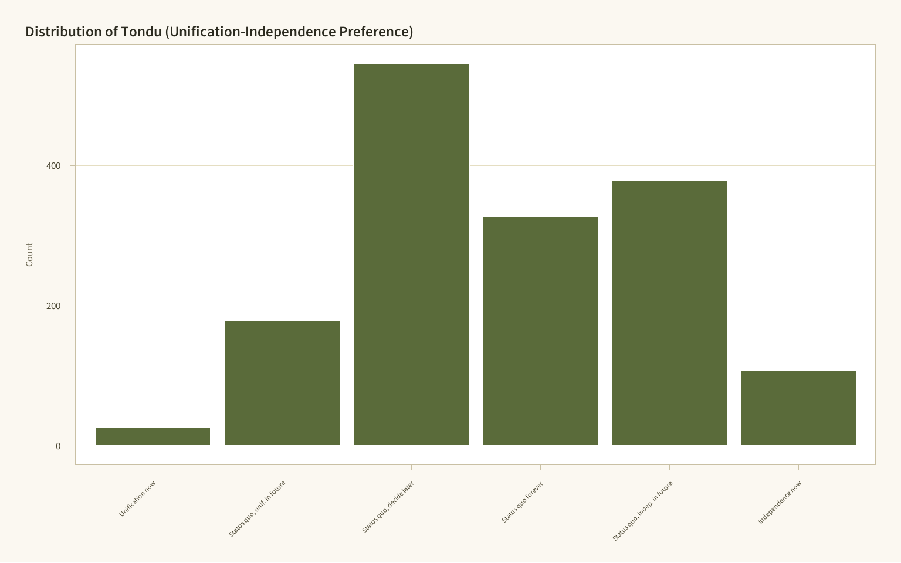
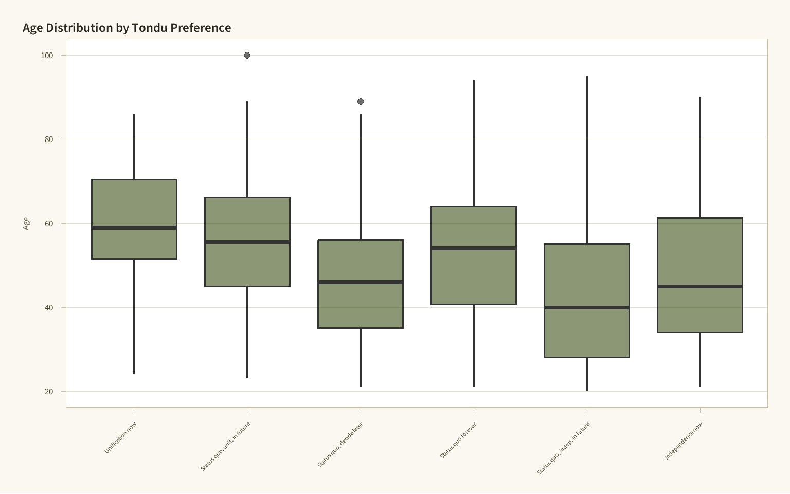

The Taiwan Election and Democratization Study (TEDS) 2016 dataset captures survey responses related to the 2016 Taiwanese presidential election. Below, we load the data and explore its structure, handle missing values, and examine key variables.
Working with survey data like TEDS2016 presents several common challenges:
Missing values: Many variables contain NA values from non-responses or refusals. These are common in political surveys where respondents may not wish to disclose preferences.
Coded responses: Some variables use numeric codes where specific values (e.g., 9, 98, 99) represent “no response” or “don’t know” rather than true missing data.
Variable types: Variables imported from Stata (.dta) files may carry label attributes that need to be converted for analysis in R.
Dealing with Missing Values
Strategies depend on the analysis context:
Listwise deletion (na.omit()) — Remove rows with any missing values. Simple but can lose substantial data.
Pairwise deletion — Use all available data for each specific analysis (default in cor() with use = "pairwise.complete.obs").
Imputation — Replace missing values with estimated values (mean, median, or model-based). Appropriate when missingness is random.
For this exploratory analysis, we use pairwise deletion to preserve as much data as possible.
Frequency Table and Barchart: Tondu Variable
The Tondu variable captures respondents’ preferences on the unification-independence spectrum between Taiwan and China.
# Assign labels to the Tondu variableTEDS_2016$Tondu <-as.numeric(TEDS_2016$Tondu)tondu_labels <-c("Unification now", "Status quo, unif. in future","Status quo, decide later", "Status quo forever","Status quo, indep. in future", "Independence now","No response")TEDS_2016$Tondu_factor <-factor(TEDS_2016$Tondu,levels =1:7,labels = tondu_labels)# Frequency tabletondu_freq <-table(TEDS_2016$Tondu_factor)tondu_df <-as.data.frame(tondu_freq)names(tondu_df) <-c("Response", "Frequency")kable(tondu_df)
Response
Frequency
Unification now
27
Status quo, unif. in future
180
Status quo, decide later
546
Status quo forever
328
Status quo, indep. in future
380
Independence now
108
No response
0
# Barchartggplot(TEDS_2016 %>%filter(!is.na(Tondu_factor)),aes(x = Tondu_factor)) +geom_bar(fill = stern::stern_palette[["olive"]], color ="white") +labs(title ="Distribution of Tondu (Unification-Independence Preference)",x =NULL, y ="Count") + stern::theme_stern() +theme(axis.text.x =element_text(angle =45, hjust =1, size =9))

Exploring Relationships: Tondu and Other Variables
To explore the relationship between Tondu and variables like female, DPP, age, income, edu, Taiwanese, and Econ_worse, several methods are appropriate:
Cross-tabulations for categorical predictors (e.g., female, DPP, Taiwanese)
Chi-squared tests to assess statistical association between categorical variables
Multinomial logistic regression since Tondu is a multi-category outcome
Boxplots / ANOVA for continuous predictors (e.g., age, income, edu) across Tondu categories
# Cross-tabulation: Tondu by Party ID (DPP)TEDS_2016$DPP <-as.numeric(TEDS_2016$DPP)tondu_dpp <-table(TEDS_2016$Tondu_factor, TEDS_2016$DPP)kable(tondu_dpp, col.names =c("Non-DPP", "DPP"))
Non-DPP
DPP
Unification now
26
1
Status quo, unif. in future
147
33
Status quo, decide later
378
168
Status quo forever
256
72
Status quo, indep. in future
144
236
Independence now
38
70
No response
0
0
# Age distribution across Tondu categoriesTEDS_2016$age <-as.numeric(TEDS_2016$age)ggplot(TEDS_2016 %>%filter(!is.na(Tondu_factor) &!is.na(age)),aes(x = Tondu_factor, y = age)) +geom_boxplot(fill = stern::stern_palette[["olive"]], alpha =0.7) +labs(title ="Age Distribution by Tondu Preference",x =NULL, y ="Age") + stern::theme_stern() +theme(axis.text.x =element_text(angle =45, hjust =1, size =9))

The votetsai Variable
The votetsai variable indicates whether the respondent voted for DPP candidate Tsai Ing-wen in the 2016 presidential election.
TEDS_2016$votetsai <-as.numeric(TEDS_2016$votetsai)votetsai_freq <-table(TEDS_2016$votetsai)votetsai_df <-as.data.frame(votetsai_freq)names(votetsai_df) <-c("Vote for Tsai", "Frequency")kable(votetsai_df)
Vote for Tsai
Frequency
0
471
1
790
# Relationship between Tondu preference and voting for Tsaitondu_vote <-table(TEDS_2016$Tondu_factor, TEDS_2016$votetsai)tondu_vote_df <-as.data.frame.matrix(prop.table(tondu_vote, margin =1))if(ncol(tondu_vote_df) >=2) { tondu_vote_df$Response <-rownames(tondu_vote_df)names(tondu_vote_df)[1:2] <-c("Did not vote Tsai", "Voted Tsai")ggplot(tondu_vote_df, aes(x = Response, y =`Voted Tsai`)) +geom_col(fill = stern::stern_palette[["mustard"]], color ="white") +scale_y_continuous(labels = scales::percent) +labs(title ="Proportion Voting for Tsai by Tondu Preference",x =NULL, y ="% Voted for Tsai") + stern::theme_stern() +theme(axis.text.x =element_text(angle =45, hjust =1, size =9))}
Systematic Literature Review: Prompt Engineering with Multiple AI Models
Objective: Design prompts to conduct a structured systematic literature review on data mining and machine learning, comparing outputs across ChatGPT, Copilot, and Claude.
Step 1: Initial Prompt (Baseline)
The following baseline prompt was submitted to all three models:
“Conduct a 2,000-word structured systematic literature review on the applications of information extraction and machine learning predictions for voting trends in real-world domains. Include a methodology section, synthesize key findings, identify trends and gaps, and propose one testable hypothesis. Use an academic tone and emulate systematic review standards.”
Step 2: Model Response Analysis
Excluded Grok, replaced with Claude due to loading issues
Each model’s output was evaluated on five dimensions:
Criterion
ChatGPT
Copilot
Claude
Structure (methodology section, review format)
F
T
T
Synthesis (key findings summarized)
T
F
F
Trends & Gaps (meaningful identification)
F
T
T
Hypothesis (testable, relevant)
T
T
F
References (accuracy via Google Scholar)
F
F
T
Strengths and weaknesses noted:
ChatGPT: The best option for synthesizing finding. But the formatting of GPT is very recognizable, and does not align with a academic review. It reads more like a business brief.
Copilot: Generated a clear testable hypothesis that aligned with the literature themes.The main limitation was lack of synthesis; sources were often described individually rather than integrated. Some references were made up.
Claude: References were generally more concrete and easier to verify, suggesting stronger grounding in identifiable sources.However, it did not consistently synthesize findings or generate a clear testable hypothesis, leaving the analysis feeling more descriptive than analytical.
Step 3: Refined Prompts
Based on the analysis above, tailored prompts were created for each model:
Refined prompt for ChatGPT:
“Write a 2,000-word systematic literature review on applications of information extraction and machine learning for predicting voting trends. Include a clearly labeled methodology section describing how literature was selected and synthesized. Pay particular attention to identifying specific trends and unresolved research gaps in the literature. All references should correspond to real, verifiable academic publications that can be found through Google Scholar.”
Refined prompt for Copilot:
“Produce a 2,000-word structured systematic literature review on information extraction and machine learning applications for predicting voting trends. Integrate findings across studies rather than summarizing them individually. All references should correspond to real, verifiable academic publications that can be found through Google Scholar.”
Refined prompt for Claude:
“Imagine you’re a data scientist conducting a 2,000-word systematic literature review on information extraction and machine learning applications for predicting voting trends. Outline a clear methodology, synthesize key findings with fresh insights, highlight trends and gaps, and propose one bold, testable hypothesis. Emphasize synthesis of key findings. Maintain a rigorous academic tone.”
Step 4: Cross-Model Collaboration
A synthesis prompt was used to combine the strongest elements from all three models:
“Using these drafts from three AI models [paste outputs], produce a 2,000-word structured systematic literature review on data mining and machine learning applications. Combine the strongest methodology, findings, trends, gaps, and hypothesis into a cohesive, academically sound document.”
Synthesis decisions:
Methodology section drawn from: Claude
Key findings integrated from: Chat GPT
Trends and gaps sourced from: Claude
Final hypothesis based on: Copilot
Step 5: Reflection
How did each model approach the systematic review differently?
The models differed primarily in how they balanced structure, synthesis, and exploratory insight. ChatGPT prioritized structure to a fault. The degree of organization seems unnatural. Copilot focused more on identifying trends and potential research directions but struggled to integrate sources into a cohesive narrative. Claude produced the best and most academic style output.
Which prompt refinements yielded the best results for each model?
Prompt refinements that explicitly specified missing elements produced the most improvement. For ChatGPT and Copilot, emphasizing sourcing ensured we got good information. For Claude, explicitly requiring synthesized outputs created a tighter key findings section.
What did you learn about leveraging AI for structured academic reviews?
Different models excel at different things. Ultimately, for formatting and writing papers, it is most valuable to extract only the valuable bits from AI output and frame them in your own words. Copy and pasting makes you sound foolish, because AI is not very concise.